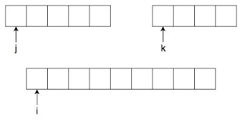

Merge sort applies the divide and conquer strategy. We divide the sequence into smaller parts until we reach trivially sorted single-element arrays, then combine those parts back into a fully sorted sequence.
The Algorithm
mergeSort(low, high):
if low < high:
mid = floor((low + high) / 2)
mergeSort(low, mid)
mergeSort(mid + 1, high)
merge(low, mid, high)Step by step:
- If
low == high, the subarray is one element — trivially sorted, return. - Calculate
mid = floor((low + high) / 2). - Recursively sort the left half
(low, mid)and right half(mid+1, high). - Merge the two sorted halves back together using the merge function.
The Merge Operation
The merge function has three logical parts:
- Part 1 — compare values from both halves and write the smaller one to a temp array, until one half is exhausted.
- Part 2 — copy any remaining elements from whichever half still has items.
- Part 3 — copy the temp array back into the original array.
merge(low, mid, high):
j = low; k = mid + 1; i = low
// PART 1: merge while both halves have elements
while j <= mid and k <= high:
if a[j] < a[k]:
b[i] = a[j]; j++
else:
b[i] = a[k]; k++
i++
// PART 2: copy remaining elements
if j <= mid:
while j <= mid: b[i] = a[j]; j++; i++
else:
while k <= high: b[i] = a[k]; k++; i++
// PART 3: copy temp array back
i = low
while i <= high: a[i] = b[i]; i++
Fig. 2 — Merge algorithm detail
The key insight: arrays pointed to by j (left) and k (right) are
already sorted because we divided all the way down to single elements and built up from there.
Merging two sorted lists always produces a sorted list — and that's the heart of the algorithm.
Part-by-Part Breakdown
Part 1: We scan both halves simultaneously, always moving the smaller element into
the temp array b. We stop when one half is fully consumed.
Part 2: One half finished first, so the other still has elements. They are already
in order, so we append them directly to b.
Part 3: The sorted result is in b. Copy it back into a.